Theme documentation
Theme Settings
Theme Settings allow you to control the overall design and common elements of your online store. From this panel, you can customize important aspects such as colors, typography, and other global styling options that appear throughout your website. These settings help maintain a consistent look and feel across all pages while allowing you to easily match your store’s appearance with your brand identity without editing any code.
Favicon
A favicon is a small icon displayed in the browser tab, bookmarks, and other browser locations. It helps customers quickly identify your store and improves brand recognition across different browsing environments.
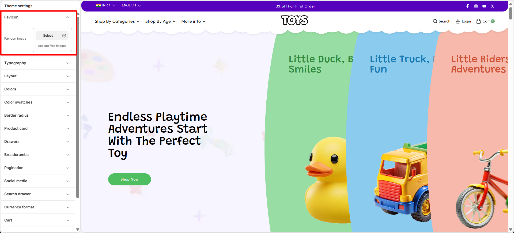
Add a Custom Favicon for Your Store
With Soft, you can easily upload a custom favicon that represents your brand identity. Using a recognizable favicon helps create a consistent and professional appearance for your online store.
- Open the Theme Customizer.
- Click on the Theme Settings icon.
- Select the Favicon option.
- Upload your favicon image.
- Click Save to apply your changes.
Colors
One of the most important elements in creating a visually appealing and functional online store is the proper use of color. A well-designed color system helps reinforce your brand identity while also improving the overall shopping experience for your customers. In Soft, color schemes allow you to define background colors, text colors, and accent colors that can be applied across different sections of your store. These color settings are used throughout general sections, as well as the header and footer, ensuring a consistent and professional look across your entire website.
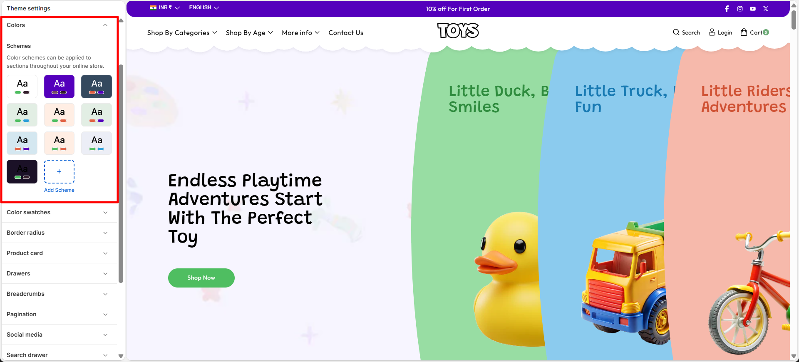
Customize Your Colors to Match Your Brand
Personalizing your theme’s colors is simple with Soft. You can easily adjust the available color schemes or create new ones to match your brand’s visual identity and give your store a unique and polished appearance.
- Open the Theme Customizer.
- Click on the Theme Settings icon.
- Select the Colors option.
- Choose an existing color scheme or click Add Scheme to create a new one.
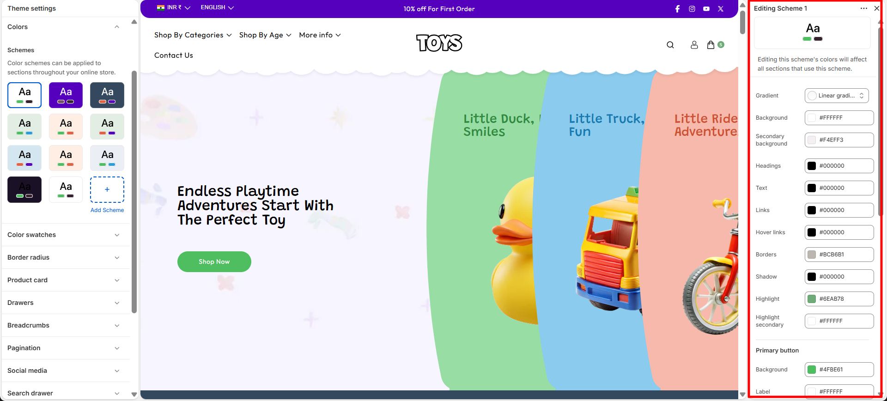
Typography
Typography plays an important role in defining the visual style and readability of your online store. With the Typography settings in Soft, you can customize the fonts used for headings and body text across your website. Adjusting typography helps create a consistent brand identity while ensuring that your content is clear and easy for customers to read. You can also control the font size scale to increase or decrease text size across the store for better visual balance and accessibility.
Customize Your Store Fonts
Soft allows you to easily personalize the fonts used throughout your store. You can select different fonts for headings and body text, as well as adjust the font size scale to achieve the perfect look that matches your brand style.
- Open the Theme Customizer.
- Click on the Theme Settings icon.
- Select the Typography option.
- Choose your preferred Heading Font and adjust the Font Size Scale.
- Select the Body Font and adjust its Font Size Scale if needed.
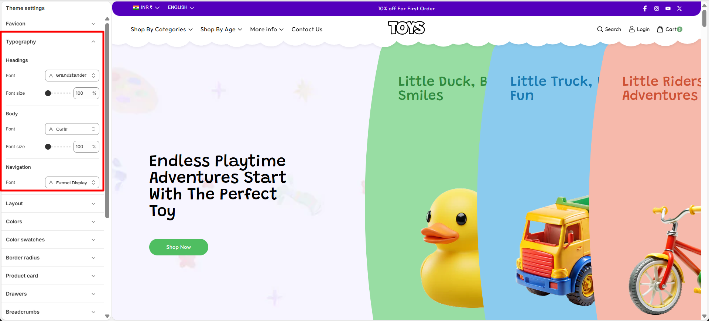
Layout
The Layout settings allow you to control the overall width and spacing of your store’s content. You can adjust the Page Container width to define how wide your website layout appears across different screen sizes. In addition, the grid spacing settings help manage the space between columns and rows in sections that use grid layouts. For example, sections like Collection List, Multicolumn Images, and Featured Collection use these grid settings to determine how much space appears between items. By adjusting column and row spacing, you can create a more compact layout or a more spacious design depending on your store’s visual style.
Customize Your Store Layout
Soft allows you to easily customize your store layout by controlling the page width and the spacing between grid elements used in multiple sections across the store.
- Open the Theme Customizer.
- Click the Theme Settings icon.
- Select the Layout option.
- Adjust the Page Container slider to control the maximum width of your store layout.
- Modify the Column Spacing and Row Spacing to change the spacing between grid items used in sections such as Collection List, Featured Collection, and Multicolumn Images.
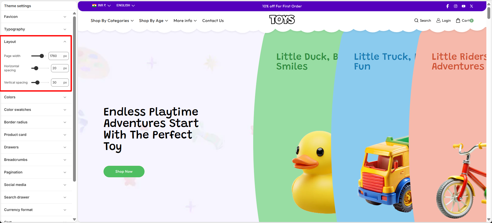
Scroll to Top
The Scroll to Top setting allows you to enable a floating button that helps customers quickly return to the top of the page. This improves navigation, especially on long pages such as collection or product pages.
Scroll to Top Settings
You can control the visibility and appearance of the scroll-to-top button. These options allow you to match the button style with your store design while ensuring easy access for users browsing through your content.
- Show Scroll to Top Button – Enable this option to display the floating scroll-to-top button on the storefront.
- Color Scheme – Choose the color scheme used for the scroll-to-top button so it matches your theme's design.
- Open the Theme Customizer.
- Click Theme Settings.
- Select Scroll to Top.
- Enable the scroll-to-top button and customize its color scheme and border radius.
- Click Save to apply the changes.
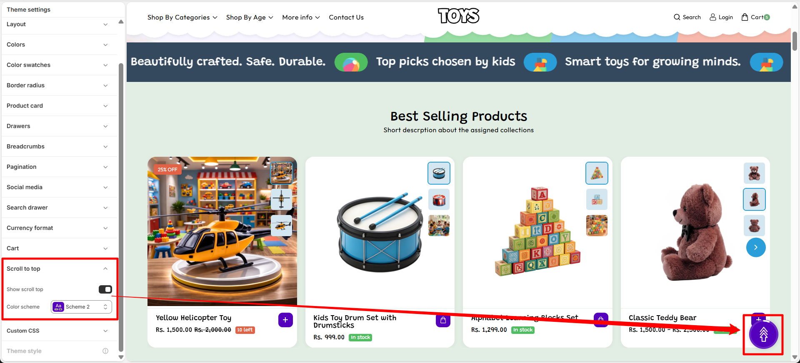
Swatches
The Swatches setting allows you to control the appearance of color variant swatches in your store. These swatches are displayed on the product page and quick add sections, helping customers visually select different product colors.
Swatch Shape
This option lets you change the shape of the color swatches used for product variants. You can choose a style that best matches your store’s design and layout.
- Swatch shape – Select the preferred shape for color swatches displayed on product pages and quick add drawers.
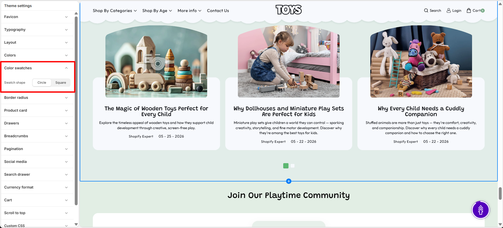
- Open the Theme Customizer.
- Click Theme Settings.
- Select Swatches.
- Choose your preferred Swatch shape.
Border Radius
The Border Radius setting allows you to control the corner roundness of different elements across your store. You can customize the appearance of product cards, buttons, images, badges, inputs, and drawers to create a consistent design style.
Border radius values
Adjust the radius value for each element to control how rounded or sharp the corners appear. Higher values create more rounded corners, while lower values create a sharper appearance.
- Product Card Border Radius – Set the corner roundness of product cards displayed across the store.
- Buttons Border Radius – Adjust the corner roundness of buttons to control their overall appearance.
- Images Border Radius – Customize the corner style of images used throughout the theme.
- Badge Border Radius – Set the roundness of product badges, labels, and promotional tags.
- Inputs Border Radius – Control the corner roundness of input fields, search boxes, and form elements.
- Drawer Border Radius – Adjust the corner roundness of drawers such as cart and navigation drawers.
How it works
The theme applies the selected border radius values to the corresponding elements throughout the store, helping maintain a consistent visual style.
- Higher values create more rounded corners.
- Lower values create sharper corners.
- Each setting controls the radius of its respective element.
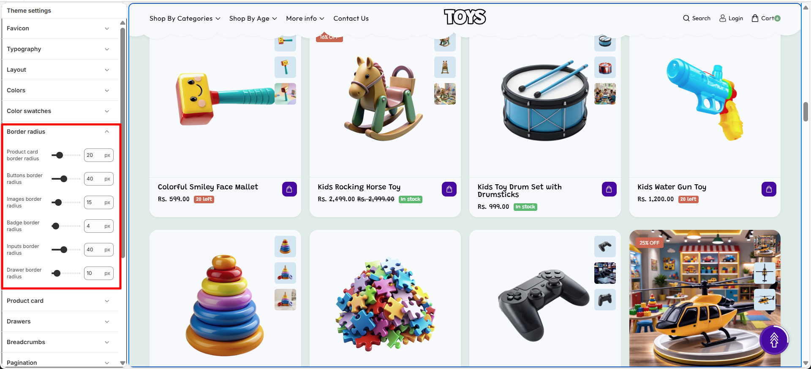
- Open the Theme Customizer.
- Click Theme Settings.
- Select Border Radius.
- Adjust the required border radius values.
- Save the changes.
Product Card
The Product Card controls how products are displayed throughout your store, including collection pages, featured product sections, search results, and recommendation blocks. It serves as the primary product preview component, allowing customers to quickly view product details, pricing, availability, and purchase options while browsing.
In the Soft theme, Product Cards can be customized through a variety of settings that control the card background, add-to-cart button appearance, thumbnail styling, promotional badges, and inventory indicators. These options help create a consistent shopping experience while ensuring product information remains clear and visually appealing.
Product Card Customization Options
- Show card background – Enables a background container behind each product card to improve visual separation and emphasis.
- Image background color – Sets the background color displayed behind product images.
- Add to cart button – Customize the appearance of the add-to-cart button displayed on product cards.
- Background – Defines the default background color of the add-to-cart button.
- Label – Sets the text color used within the add-to-cart button.
- Hover background – Controls the background color displayed when customers hover over the button.
- Hover label – Defines the text color shown when the button is hovered.
- Thumbnail background – Specifies the background color used for product thumbnails and image previews.
- Thumbnail border – Defines the border color displayed around product thumbnails.
- Show badges – Enables promotional and inventory badges on product cards.
- Badge position – Choose whether badges appear in the top-left or top-right corner of the product image.
- Sale badge color – Sets the accent color used for sale badges.
- Sale badge background – Defines the background color displayed for sale badges.
- Sale badge text – Controls the text color displayed inside sale badges.
- Soldout badge color – Sets the accent color used for sold-out badges.
- Soldout badge background – Defines the background color displayed for sold-out badges.
- Soldout badge text – Controls the text color displayed inside sold-out badges.
- Sale badge style – Choose how discounts are displayed, such as a text label or percentage-off format.
- Show inventory – Displays stock availability indicators on product cards.
- In stock background – Sets the background color for the in-stock indicator.
- In stock color – Defines the text color displayed for available products.
- Threshold background – Sets the background color displayed when stock reaches a low-inventory level.
- Threshold color – Defines the text color used for low-stock messages.
- Out of stock background – Sets the background color displayed when a product is unavailable.
- Out of stock color – Defines the text color used for out-of-stock messages.
- Inventory threshold – Specifies the stock quantity at which the low-stock indicator will appear.
- Open the Theme Customizer.
- Click the Theme Settings icon.
- Select Product Card.
- Configure the card background, button styles, badge settings, thumbnail appearance, and inventory indicators according to your store's branding.

Pagination
Pagination helps organize large collections of products, blog posts, or search results by dividing content across multiple pages. This improves page performance and makes it easier for customers to browse through content without being overwhelmed by a long list of items.
In the Soft theme, pagination buttons can be customized to match your store's branding. You can control the appearance of regular page buttons, hover states, and active page indicators to create a consistent and user-friendly navigation experience.
Pagination Customization Options
- Button background – Sets the default background color of pagination buttons.
- Button label – Defines the text color displayed on pagination buttons.
- Button hover background – Controls the background color displayed when customers hover over a pagination button.
- Button hover label – Sets the text color displayed during the hover state.
- Active button background – Defines the background color of the currently selected page button.
- Active button label – Sets the text color displayed on the active pagination button.
- Open the Theme Customizer.
- Click the Theme Settings icon.
- Select Pagination.
- Customize the button colors, hover states, and active page styles to match your store's branding and navigation design.
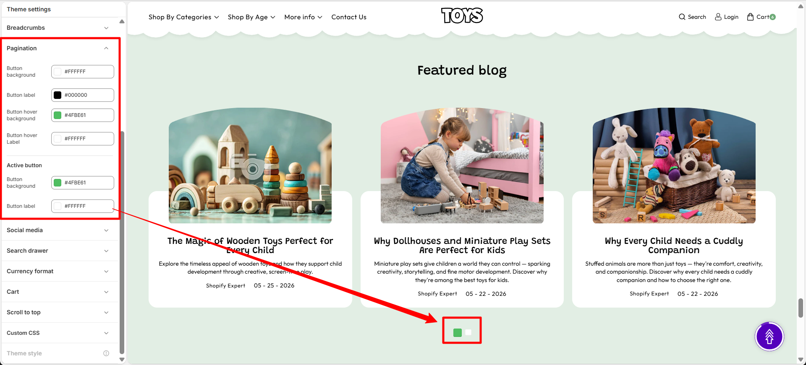
Search Drawer
The Search Drawer setting controls the appearance and functionality of the search panel that opens when customers click the search icon in the header. This drawer helps customers quickly find products by searching or selecting from suggested keywords and highlighted products.
Search Drawer Settings
You can customize the search input style and control the display of suggested keywords and featured products inside the search drawer. These options improve product discovery and make searching faster for customers.
- Collections: Displays selected product collections to help customers browse different categories easily.
- Heading: Add a title for the collections section, such as “Collections”, to introduce the displayed collections.
-
Product Cards: Customize the appearance and information
displayed on collection product cards.
-
Image Aspect Ratio: Choose the display ratio for
collection images:
- Square: Display images in a square format for a consistent grid layout.
- Show Secondary Image on Hover: Display an additional image when customers hover over a collection card.
- Show Vendor: Display the vendor name on collection cards.
- Enable Quick View: Allow customers to preview product details without leaving the current page.
-
Image Aspect Ratio: Choose the display ratio for
collection images:
-
Article Card: Customize the appearance and information
displayed on article or blog cards.
- Enable Clip Art: Enable decorative clip art elements on article cards.
- Content Background: Choose the background color of the article card content area.
- Show Author: Display the author name on article cards.
- Show Comment Count: Display the number of comments for each article.
- Show Date: Display the publication date of articles.
- Show Tags: Display article tags on the card.
- Open the Theme Customizer.
- Click Theme Settings.
- Select Search Drawer.
- Customize the search input style, add keywords, or select products to display.
- Click Save to apply the changes.
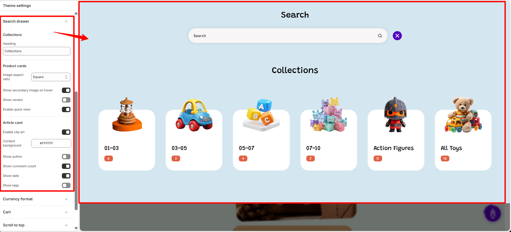
Currency Format
The Currency Format settings control how monetary values are displayed throughout your store. These settings help ensure prices are presented clearly and consistently, making it easier for customers to understand product costs regardless of their selected currency.
In the Soft theme, you can choose whether currency codes are displayed alongside prices. Showing currency codes can be particularly useful for stores that sell internationally or support multiple currencies, helping customers identify the exact currency being used.
Currency Format Options
- Show currency codes – Displays the currency code (such as USD, EUR, GBP, or INR) next to product prices throughout the store. This helps customers clearly identify the currency being used, especially when multiple currencies are available.
- Open the Theme Customizer.
- Click the Theme Settings icon.
- Select Currency Format.
- Enable or disable currency codes according to your store's pricing and localization requirements.
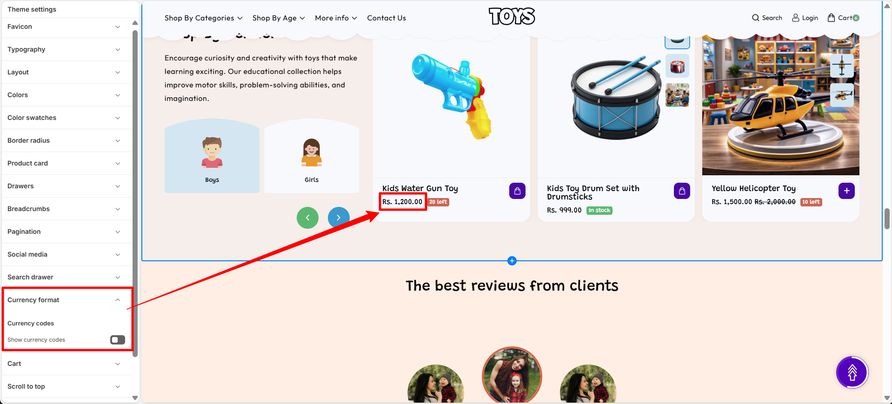
Cart & Cart Drawer
The Cart & Cart Drawer settings allow you to control how the cart behaves when customers add products to their cart. You can choose whether the cart appears as a slide-out drawer or as a separate cart page, and enable additional options like tax information, cart notes, and discount fields.
Cart Settings
These options help customize the shopping cart experience and provide additional information to customers before checkout.
-
Cart Type: Choose how the cart appears when customers add
products.
- Drawer: Opens the cart in a sliding drawer without leaving the current page.
- Page: Redirects customers to a dedicated cart page.
- Show Cart Note: Enable this option to allow customers to add special instructions or notes with their order from the cart.
- Hide Cart Note on Drawer: Hide the cart note field when the cart is displayed as a drawer.
- Show Tax Info: Display applicable tax information in the cart so customers can view tax details before checkout.
- Show Discount Option: Display a discount code field that allows customers to apply promotional codes directly from the cart.
- Show Free Shipping Bar: Enable a progress bar that informs customers how close they are to reaching the free shipping threshold.
- Free Shipping Threshold: Set the minimum cart value required to unlock free shipping.
-
Shipping Reached Celebration: Choose the celebration effect
shown when customers reach the free shipping goal.
- Confetti Burst: Displays a confetti animation when free shipping is achieved.
- Shipping Background: Choose the background color of the free shipping message area.
- Shipping Text: Select the text color displayed in the free shipping message.
- Shipping Bar: Choose the color of the free shipping progress indicator.
- Shipping Bar Background: Select the background color behind the shipping progress bar.
- Open the Theme Customizer.
- Click Theme Settings.
- Select Cart & Cart Drawer.
- Choose the cart type and enable or disable the additional cart options.
- Click Save to apply the changes.

Questions
Frequently asked questions
Make sure you click Save in the Theme Customizer after making changes. If the issue persists, refresh the page or check that you are editing the currently published theme.
Yes. You can duplicate your theme and customize the duplicate version. This allows you to test design changes safely before publishing them.
When a Theme Setting is changed, the update will automatically apply across all sections that use that setting, helping keep your store design consistent.
Social Media
The Social Media settings allow you to connect your store with your social media profiles. By adding your social profile links in this section, the corresponding social media icons will automatically appear in your store’s footer area.
How It Works
Simply paste the URL of your social media profile into the available input fields. When a valid link is added, the theme automatically displays the matching social media icon in the footer "Get in Touch" section of your storefront. If a field is left empty, its icon will not appear.
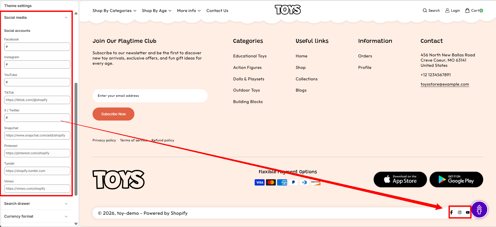